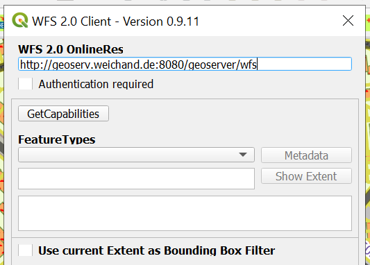
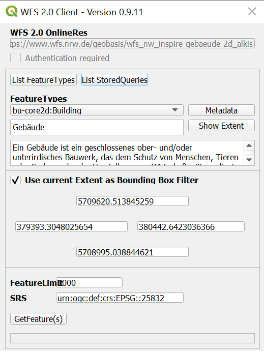
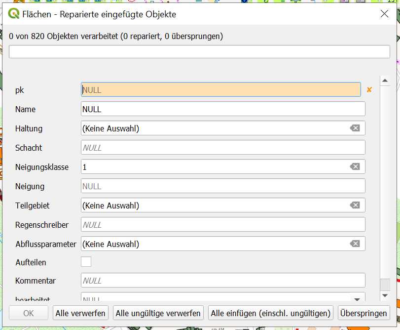
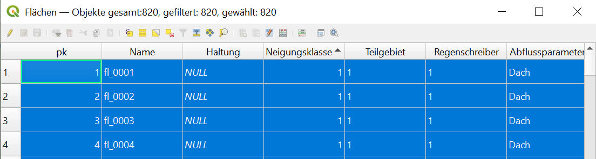
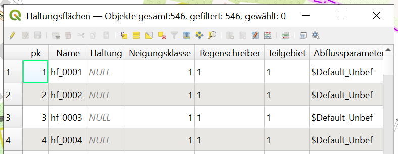
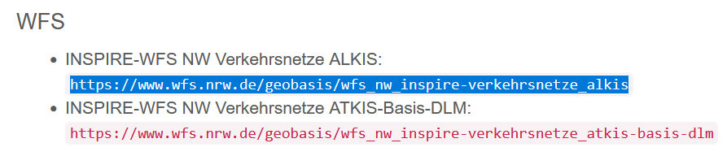
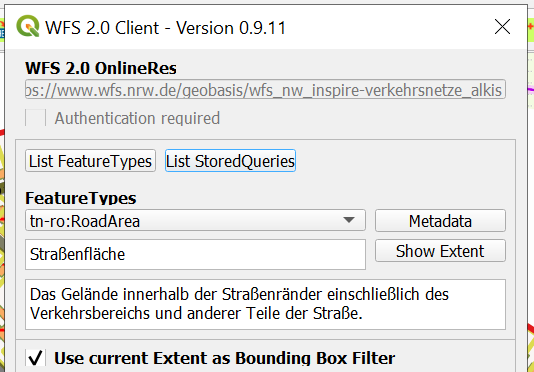

2. Import von Flächendaten¶
Eine Videoanleitung zum Import von Flächendaten ist hier zu finden.
Für die Abflussberechnung mit einem Simulationsprogramm ist es notwendig, das Einzugsgebiet in Flächen mit einheitlichen Abflussparametern/Flächendaten zu unterteilen. Dafür können Flächendaten (für NRW) aus dem INSPIRE-Portal genutzt werden. Um diese Daten laden zu können, wird das Plug-in „WFS 2.0 Client“ benötigt, das unter „Erweiterungen“ installiert werden kann.
2.1. Import Gebäudedaten¶
Als erstes sollen nun die Flächen der Gebäude in das QKan Projekt eingefügt werden. Von der INSPIRE-Startseite kann über einen Klick auf das entsprechende Thema (INSPIRE NW Gebäude) der Link für die WFS-Daten gefunden werden. Dieser befindet sich auf der Seite weiter unten unter „Webdienste“. Wichtig hierbei ist, dass der WFS-Link kopiert wird und nicht der WMS-Link:

In QGIS muss nun der „WFS 2.0 Client“ (Installation s.o.) geöffnet werden. Dort wird der kopierte Link in der ersten Zeile eingefügt und die angebotenen Themen werden über die Schaltfläche „GetCapabilities“ abgerufen:
Da der Dienst eine Begrenzung der Datenmenge verlangt empfiehlt es sich, eine räumliche Beschränkung zu aktivieren. Diese ist möglich indem die Schaltfläche „Use current Extent as Bounding Box Filter“ aktiviert wird (siehe Bild unten). Dadurch übernimmt das Programm die Grenzen der angezeigten Fläche für den Datenzugriff. Es ist daher wichtig, zunächst einen geeigneten Anzeigebereich einzustellen. Anschließend sollte das Feature Limit erhöht werden (z.B. auf 5000), das die Anzahl der übertragenen Objekte beschränkt, damit sichergestellt wird, dass alle Objekte übertragen werden. Nun können die Objekte über „Get Feature(s)“ geladen werden:
Als Kontrolle sollte anschließend die Anzahl der übertragenen Objekte mit dem Feature Limit verglichen werden. Ist diese Zahl identisch, dann ist davon auszugehen, dass nicht alle Objekte übertragen wurden. In diesem Fall müssten die Objekte erneut mit einem erhöhten Feature Limit geladen werden.
Die geladenen Objekte erscheinen nun in dem neuen temporären Layer „Building“. Zur weiteren Bearbeitung müssen diese jedoch in den Layer „Flächen“ kopiert werden. Dafür ist es empfehlenswert nur die Objekte im relevanten Teilgebiet zu übertragen. Das Teilgebiet kann in dem Layer „Teilgebiete“ definiert werden. Nun können die Objekte im Teilgebiet über Verarbeitungswerkzeuge → Vektorauswahl → Nach Position selektieren ausgewählt werden. Dabei sind die Eingaben-Layer die Layer „Teilgebiete“ und „Building“. Außerdem sollten bei der Optionswahl bei dem Ort der Objekte nur die Objekte, welche sich innerhalb des Teilgebietes befinden, ausgewählt werden. Nun können die ausgewählten Objekte kopiert werden (→ Bearbeiten → Objekte kopieren) und in den Layer „Flächen“ eingefügt werden. Dieser muss dafür im Bearbeitungsmodus sein. Die Objekte werden dann über → Bearbeiten → Objekte einfügen → Alle einfügen (einschl. Ungültigen) eingefügt:
Für die Abflussberechnung ist es nun erforderlich, dass die Attributtabelle ergänzt wird. Dafür sollte die Tabelle wie folgt ergänzt werden:
Name: beliebiger eindeutiger Name (sinnvoll ist hier eine automatisch Bezeichnung durch einen Code, z.B.:
'fl_' || lpad( format_number( pk),4,0))Teilgebiet: Name/Nummer des zu bearbeitenden Teilgebiets
Regenschreiber: Name/Nummer des Regenschreibers der zur Berechnung verwendet wird
Abflussparameter:
`Dach`(Erscheint der Name in Klammern () in der Tabelle muss die Bezeichnung in der Abflussparameter-Tabelle von HYSTEM-EXTRAN angepasst werden. Diese liegt auf dem Layer → Referenztabellen → Abflussparameter HE. In diesem Fall muss die Bezeichnung „Gebäude“ in „Dach“ geändert werden:

Die Attributtabelle sollte nun ungefähr wie hier dargestellt aussehen:
Die Objekte sollten nun im Plan in der Schraffur das Layers „Dach“ angezeigt werden. Die Daten der Gebäudeflächen sind nun ausreichend vorbereitet und sollten gespeichert werden und anschließend der Bearbeitungsmodus deaktiviert werden. Analog können nun die weiteren Flächen hinzugefügt werden.

Abbildung: Ergebnis Import Gebäudedaten
2.2. Import Flurstücke¶
Analog zu dem Import der Gebäudedaten verläuft nun der Import der Daten für die unbefestigten Flächen(Flurstücke). Den WFS-Link findet man auf der INSPIRE-Seite unter dem Thema „INSPIRE NW Flurstücke/Grundstücke_“. Die importierten Objekte werden auf dem Layer „CadestralParcel“ angezeigt.
Um nur die Flächen, welche innerhalb des Teilgebietes liegen, für die weitere Bearbeitung zu nutzen, sollte hier mit dem Verschneidungs-Tool (→ Vektor → Geoverarbeitungswerkzeuge → Verschneidung) gearbeitet werden. Als Eingabelayer sollte der Layer mit den importierten Daten „CadestralParcel“ gewählt werden, als Layer zur Überlagerung der Layer „Teilgebiete“. Die zugeschnitten Objekte liegen nun auf dem temporären Layer „Verschneidung“ und können alles ausgewählt (→ Bearbeiten → Auswählen → Alle Objekte wählen) und kopiert werden (→ Bearbeiten → Objekte kopieren). Die kopierten Objekte sollen nun auf dem Layer „Haltungsflächen“ hinzugefügt werden. Dieser muss hierzu im Bearbeitungsmodus sein.

Analog zu den Gebäude-Daten muss auch hier die Attributtabelle angepasst werden:
Name: beliebiger eindeutiger Name (sinnvoll ist hier eine automatisch Bezeichnung durch einen Code, z.B.:
'hf_' || lpad( format_number( pk),4,0))Teilgebiet: Name/Nummer des zu bearbeitenden Teilgebiets
Regenschreiber: Name/Nummer des Regenschreibers der zur Berechnung verwendet wird
Abflussparameter: Um Fehler zu Vermeiden kann hier sofort der Name für unbefestigte Flächen
$Default_Unbaus der Attributtabelle „Abflussparameter HE“ kopiert und eingefügt werden.
Die Änderungen müssen gespeichert werden und der Bearbeitungsmodus kann deaktiviert werden. Die Attributtabelle sollten nun ungefähr wie unten dargestellt aussehen. Die Schraffur (Kontur) der Objekte sollte ebenfalls dem Layer „Haltungsflächen“ entsprechen.
Abbildung: Attributtabelle nach Bearbeitung
2.3. Import Straßen¶
Als letzter Datensatz sind noch die Straßenflächen zu importieren. Der Link für die WFS-Daten kann auf der INSPIRE-Seite unter dem Thema „Verkehrsnetze“ gefunden werden. Es muss der ALKIS-Link (s.u.) kopiert werden.
Bei der Datenabfrage mit WFS 2.0 Client ist darauf zu achten, dass hier in dem Drop-down Menü als Feature Type „RoadArea“ ausgewählt wird. Der Rest des Vorgehens läuft analog zu den vorher beschriebenen Vorgängen ab.
Auch hier sollten mit dem Verschneidungs-Tool die importierten Objekte auf die Ausdehnung des Teilgebietes reduziert werden (Vorgehen analog zu Import Flurstücke). Alle Daten des neuen Layers „Verschneidung“ sollten nun wieder kopiert und in den Layer „Flächen“ eingefügt werden.
Bei der Ergänzung der Attributtabelle muss darauf geachtet werden, dass die Änderungen durch „Gewählte aktualisieren“ vorgenommen werden werden, damit nicht auch die schon vorhandenen Gebäudeflächen geändert werden. Die Tabelle wird ebenfalls um folgende Attribute ergänzt:
Name: beliebiger eindeutiger Name (sinnvoll ist hier eine automatisch Bezeichnung durch einen Code, z.B.:
'fl_' || lpad( format_number( pk),4,0))Teilgebiet: Name/Nummer des zu bearbeitenden Teilgebiets
Regenschreiber: Name/Nummer des Regenschreibers der zur Berechnung verwendet wird
Abflussparameter: „Strasse“ (Erscheint der Name in Klammern () in der Tabelle muss die Bezeichnung in der Abflussparameter-Tabelle von HYSTEM-EXTRAN angepasst werden. In diesem Fall muss die Bezeichnung „Straße“ in „Strasse“ umgeändert werden.)
Alle nötigen Flächendaten sind nun importiert und vorbereitet. Als nächstes sollten die unbefestigten Flächen erzeugt werden.
Abbildung: Planschraffur nach fertigen Import